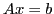
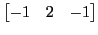
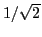

Next: About this document ...
Daeshik Choi
A sharp bound on the convergence rate of an aggregation-based algebraic multi-grid method applied to a 1D model problem
4200 Mary Gates Memorial Dr Ne
Apt P213
Seattle WA 98105
ds77choi@math.washington.edu
We consider the linear system

arising from one-dimensional
Poisson's equation with Dirichlet boundary conditions, where  is the
square matrix having the stencil form
is the
square matrix having the stencil form

. Here we show, using some properties of centrosymmetric
matrices, that
a pairwise aggregation-based algebraic 2-grid method reduces the
-norm
of the error at each step by at least the factor

.
Copper Mntn
2013-01-30